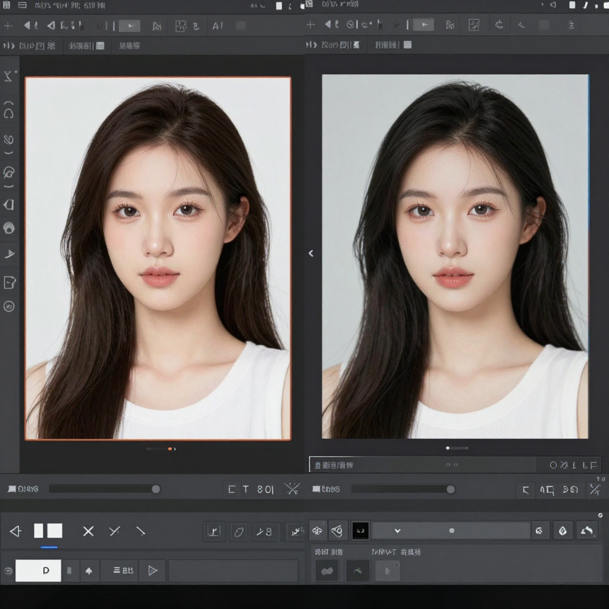

Best AI Photo Editor 2026: Top 8 Tools Compared
📅 Last Updated: March 29, 2026

📋 Table of Contents
Edit Photos Like a Pro with AI
AI photo editors use machine learning to enhance, retouch, and transform photos automatically. From removing backgrounds to replacing skies, smoothing skin, and upscaling resolution, these tools make professional photo editing accessible to everyone.
| Tool | Best For | Price | AI Features | Rating |
|---|---|---|---|---|
| Adobe Firefly | Best professional editor | $10/mo | Generative fill, remove, expand | 9.5/10 |
| Luminar Neo | Best AI adjustments | $10/mo | Sky replacement, portrait AI | 9/10 |
| Topaz Photo AI | Best enhancement | $199 one-time | Upscale, denoise, sharpen | 9/10 |
| Canva AI | Best all-in-one design | $13/mo | Background remove, magic edit | 8.5/10 |
| Photoroom | Best product photos | Free / $10/mo | Background removal, mockups | 8.5/10 |
| Pixelcut | Best free background removal | Free / $10/mo | AI background, shadows | 8/10 |
| Fotor AI | Best quick edits | Free / $9/mo | One-click enhance, AI effects | 8/10 |
| Evoto | Best portrait retouching | $10/mo | AI skin, body, face retouch | 8/10 |
Adobe Firefly — The Professional Standard
Adobe Firefly (integrated into Photoshop) offers the most powerful AI photo editing capabilities. Generative Fill lets you add, remove, or replace any element in a photo using text descriptions. It is the tool professional photographers rely on. For more details, see our AI image upscaler guide.
Best Free AI Photo Editor
- Canva Free — Basic AI editing, background removal
- Fotor Free — One-click AI enhancement
- Pixelcut Free — Background removal and mockups
- Photoroom Free — Product photo editing
🎁 Free AI Tools Guide 2026
Download our free guide with 50+ AI tool comparisons, pricing, and recommendations.
Download Free Guide →📖 Related Articles
Pros & Cons at a Glance
Adobe Photoshop AI
✅ Pros
• Industry standard
• Generative Fill
• Professional results
❌ Cons
• $20/month
• Complex interface
• Requires Adobe subscription
Canva AI
✅ Pros
• One-click edits
• Background removal
• Free tier
❌ Cons
• Limited advanced editing
• Not for professionals
• Quality limits
Luminar Neo
✅ Pros
• AI-powered presets
• Easy sky replacement
• One-time purchase option
❌ Cons
• $10/month or $99 one-time
• Smaller plugin ecosystem
• Slower on old hardware
Remove.bg
✅ Pros
• Instant background removal
• API available
• Free for low volume
❌ Cons
• One-trick tool
• Paid for high volume
• Edge artifacts
Topaz Photo AI
✅ Pros
• Best noise reduction
• Sharpening and upscaling
• Batch processing
❌ Cons
• $199 one-time
• GPU intensive
• Standalone or plugin only
Frequently Asked Questions
What is the best AI photo editor?
Adobe Photoshop AI (Generative Fill) is the best professional AI photo editor. Luminar Neo is best for one-click AI enhancements, and Canva AI is best for quick, easy edits on a budget.
Can AI edit photos automatically?
Yes, AI photo editors like Luminar Neo and Adobe Lightroom AI can automatically enhance exposure, color, and composition. They analyze your photo and apply intelligent adjustments in one click.
Is there a free AI photo editor?
Canva AI offers free background removal and basic AI editing. Google Photos has free Magic Eraser on Pixel phones. Remove.bg offers free background removal for low-volume use.
What is AI Generative Fill?
Generative Fill (Adobe Photoshop AI) lets you select any area of a photo and describe what you want to add, remove, or replace using natural language. The AI generates realistic content that blends seamlessly.
Can AI remove backgrounds from photos?
Yes, tools like Remove.bg, Canva AI, and Adobe Photoshop can instantly remove backgrounds from photos using AI. Most produce clean cutouts in seconds with no manual selection needed.
Edit Photos Professionally with AI
Try the best AI photo editors today.
Try Adobe Firefly Try Canva Free